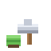
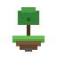
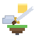

Анархиябез правил
Единственный режим проекта. Что не спрятал — потерял: за забором никто не следит, а помощь не придёт.
фан-сайт · не связан с администрацией проекта
Анархия · Рейды · PvP без правил
Один из самых шумных анархических проектов рунета: рейды, кланы и PvP без правил — и экономика, в которой ресурсы реально чего-то стоят.
mc.funtime.su
Ещё адрес: play.funtime.su · порт по умолчанию 25565
Цифры онлайна — из открытых мониторингов, они меняются каждый день.
FunTime — крупный русскоязычный анархический проект. Отдельных режимов нет: весь сервер про анархию. Привата почти нет — базу прячут, а не защищают, зато есть кланы, войны, аукцион и экономика, в которой ресурсы реально чего-то стоят.
Всё держится на трёх вещах: найти место, спрятать базу и не потерять её в первый же рейд. Никаких отдельных режимов — зашёл и сразу в бой за территорию, лут и репутацию.
Этот сайт — фанатский гид. Мы не администрируем сервер, не выдаём привилегии и не продаём ключи. Все официальные вопросы — к администрации проекта.
Отдельных режимов у проекта нет — FunTime целиком про анархию. Вот из чего она складывается.
Единственный режим проекта. Что не спрятал — потерял: за забором никто не следит, а помощь не придёт.

Чужие базы находят, вскрывают и выносят. Умение рейдить здесь ценится выше красивого дома.
Кровать — твоя точка возрождения. Поставил, запомнил координаты и никому их не показывай.

Шахты и фермы кормят рейды. Ресурсы — местная валюта: на них покупают снаряжение и сбывают лут.
Найти чужую базу — половина победы. Следы крафта, срубленные деревья и странные координаты выдают всё.

Одному на анархии тяжело: союзы дают защиту, но предают чаще, чем враги. Выбирай состав аккуратно.
Описание общее, «как устроена анархия»: конкретные команды, механики и ивенты сверяй на самом сервере — их правят чаще, чем любые гайды.
Иллюстрации в пиксель-стиле, нарисованные специально для сайта: база, рейд, кровать, рынок, карта и руины.
Это иллюстрации, а не скриншоты с сервера: настоящие базы игроков выглядят скромнее, зато живут дольше.
Подойдёт любая версия 1.8 – 1.21. Пиратка или лицензия — решаешь ты, но лицензия избавит от части проблем с чатом.
Кнопка Multiplayer на главном экране → «Добавить сервер». Имя — любое, например FunTime.
mc.funtime.su — и жми «Готово», затем «Подключиться». Порт обычно не нужен.
С телефона не зайдёшь. FunTime — Java-сервер. Для Bedrock-версии проекта существует отдельный адрес (по данным мониторингов — funtime-be.su), но это уже другой клиент и другие правила.
Практика, а не теория: что делать в первую ночь, куда прятать базу и как не потерять лут в рейде.
Эксплойтов, дюпов и «секретных методов» здесь нет: такие вещи ломают экономику сервера и заканчиваются баном.
mc.funtime.su. Дополнительно работает play.funtime.su, порт по умолчанию — 25565.
Основной FunTime — Java Edition, с телефона напрямую не зайти. У проекта есть отдельный Bedrock-адрес, но это другой клиент и другой список механик.
Поддерживается диапазон 1.8 – 1.21. Если не понимаешь, какую взять — бери 1.20.1 или 1.21: больше всего плагинов и меньше сюрпризов.
Вход свободный. На проекте есть донат-привилегии, но играть и развиваться можно без них — просто медленнее.
Проверь адрес и версию клиента, отключи VPN и сторонние моды. Если не помогает — сервер могли перезапускать: подожди пару минут или сверься с официальными каналами проекта.
Нет. Это фанатский гид, сделанный игроками. Он не связан с администрацией FunTime и Mojang, не выдаёт привилегии и не принимает платежи.